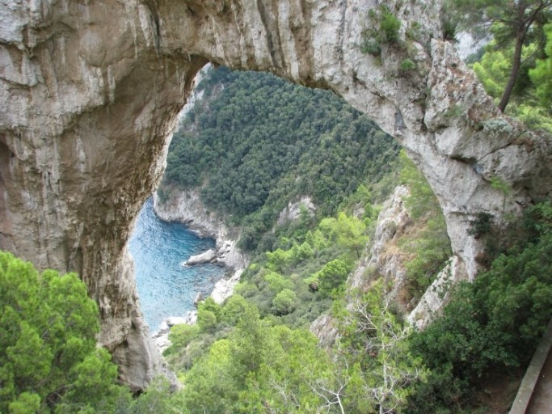
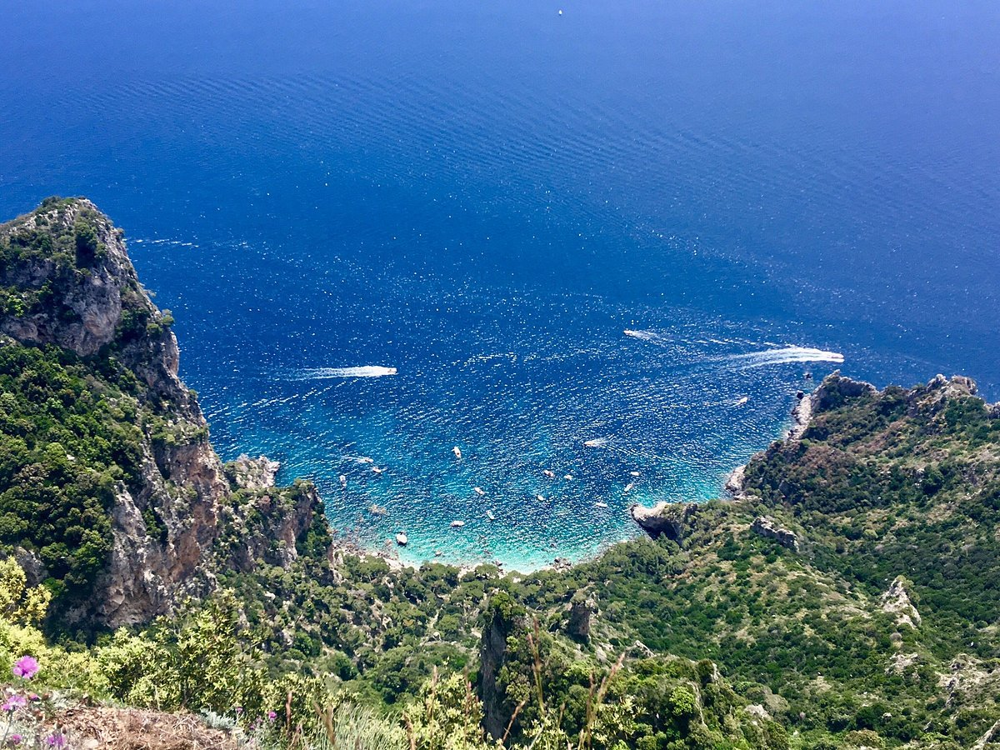
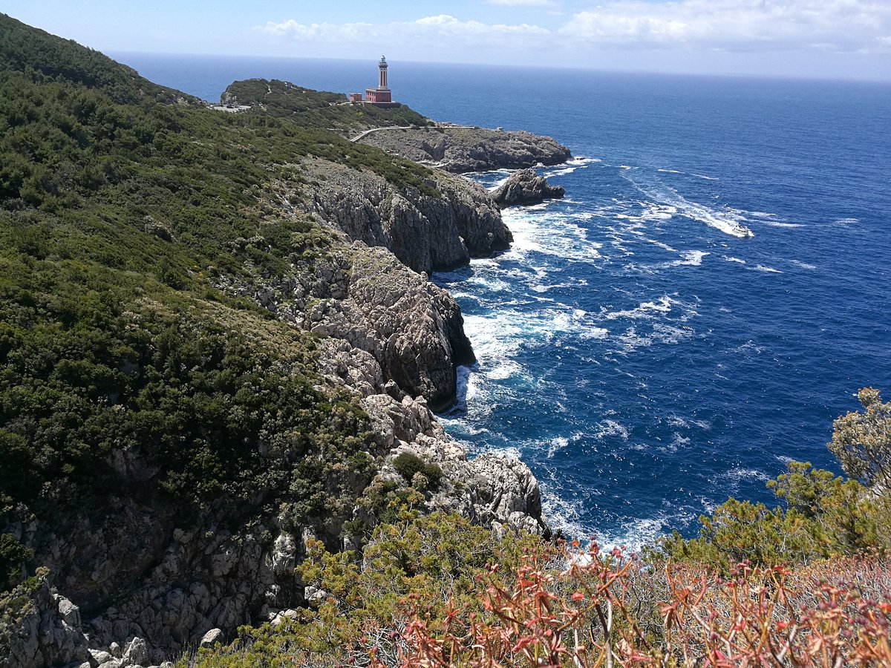

대표 여행지

Arco Naturale
카프리 동쪽 해안에 있는 Arco Naturale은 무너진 동굴의 잔해로 자연적으로 만들어진 아치이다. 이곳은 카프리섬의 랜드마크 중에서 사진이 가장 많이 찍힌 곳 중 하나다.

Monte Solaro
항구 옆에서 버스 티켓 구매하여 이동할 수 있는 곳이며, 리프트를 타고 올라가는 곳이다. 리프트를 타고 오르는 동안 앞에 펼쳐진 바다와 섬의 경치를 구경할 수 있으며 이곳에 다녀온 여행자들은 이곳이 카프리 섬의 경치 1등이라고 손꼽는 장소이다. 일일 버스권은 반납하게 된다면 1유로를 돌려받을 수 있다.

Fortini Coastal Walk
Grotta Azzurra에서 Faro(등대)까지 섬의 서쪽 해안을 따라 매우 좋은 경치를 보며 산책할 수 있는 산책길이며, 사진보다 실제가 더 멋있는 곳이다. 폭이 좁은 계단이 많기 때문에 어린 자녀 또는 노인들에게는 무리가 갈 수 있습니다.